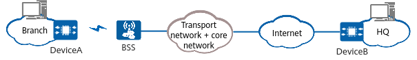

A remote branch of an enterprise needs to exchange service traffic with the headquarters. But the branch has no access to the wired WAN access service. The branch uses DeviceA to connect to the Internet through a carrier network, as shown in Figure 1. This achieves WAN interconnection with DeviceB at the headquarters and meets service requirements.
In addition, the network to be accessed needs to be automatically selected. The branch gets the APN 4gnet from the carrier.

The configuration roadmap is as follows:
<HUAWEI> system-view [HUAWEI] sysname DeviceA [DeviceA] cellular-profile 4g [DeviceA-cellular-profile-4g] mode auto [DeviceA-cellular-profile-4g] quit [DeviceA] interface cellular 2/0/0 [DeviceA-Cellular2/0/0] cellular-profile 4g [DeviceA-Cellular2/0/0] quit
[DeviceA] apn-profile 4gprofile [DeviceA-apn-profile-4gprofile] apn 4gnet [DeviceA-apn-profile-4gprofile] quit [DeviceA] interface cellular 2/0/0:1 [DeviceA-Cellular2/0/0:1] apn-profile 4gprofile
[DeviceA-Cellular2/0/0:1] ip address modem-alloc [DeviceA-Cellular2/0/0:1] quit
[DeviceA] ip route-static 0.0.0.0 0 cellular 2/0/0:1
# Run the display apn-profile configuration command to check the APN profile configuration.
[DeviceA] display apn-profile configuration -------------------------------------------------------------------------------- profile-name :4gprofile apn :4gnet
# Run the display cellular 2/0/0 radio command to check whether the network connection mode is LTE.
[DeviceA] display cellular 2/0/0 radio
Radio Information:
Current Network Connection: LTE
LTE:
Current Band : B3
Current RSRP : -63 dBm (strong)
Current RSRQ : -3 dB
Current SINR : 32 dB
Bands supported:
WCDMA : WCDMA2100 WCDMA1900 WCDMA850 WCDMA900
FDD LTE: B1 B2 B3 B5 B7 B8 B20 B28
TDD LTE: B34 B38 B39 B40 B41
FDD NR : N1 N28
TDD NR : N41 N77 N78 N79
# Run the display ip interface brief Cellular 2/0/0:1 command to check information about the cellular interface. The command output shows that the interface has an IP address, and that both the physical status and link protocol status of the interface are up.
[DeviceA] display ip interface brief Cellular 2/0/0:1 *down: administratively down !down: FIB overload down ^down: standby (l): loopback (s): spoofing (d): Dampening Suppressed (ed): error down Interface IP Address/Mask Physical Protocol VPN Cellular2/0/0:1 1.1.1.1/32 up up --
# After the configuration is done, the device can access the Internet through a cellular network.